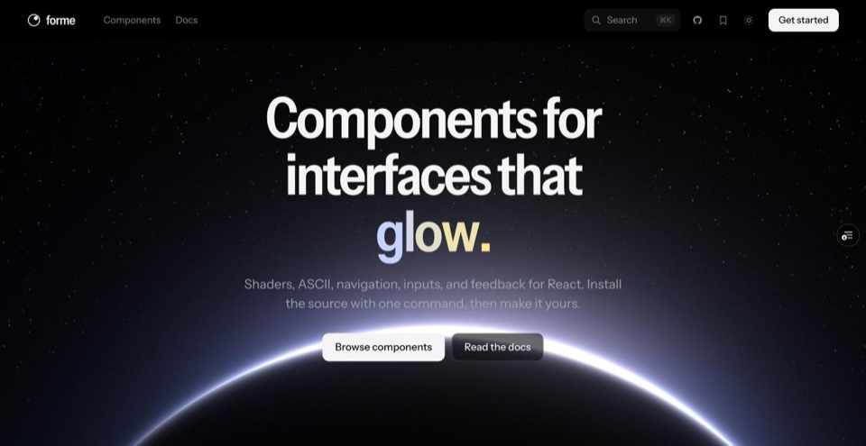
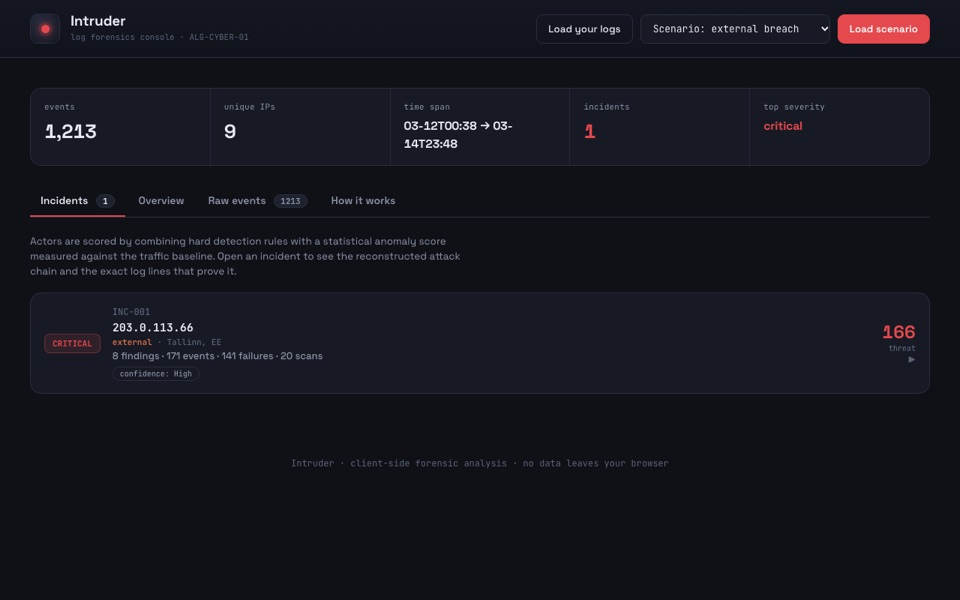
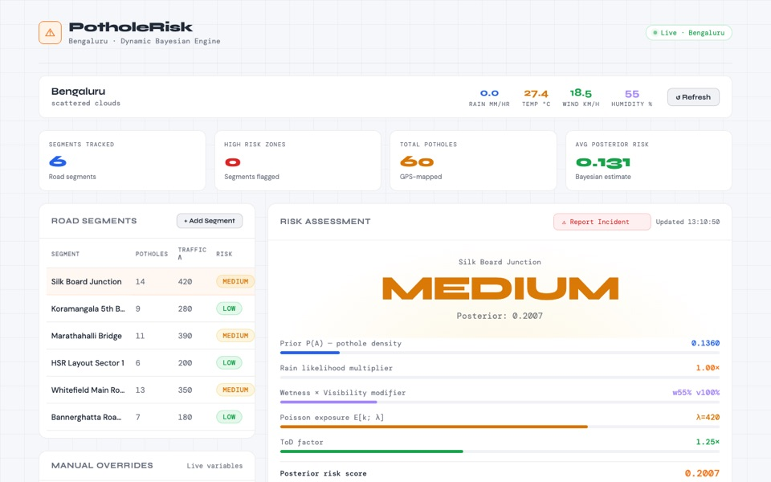
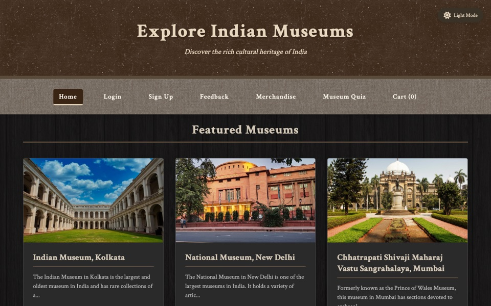

$ whoami CS student
3rd year CSE, Amrita School of Engineering, Bengaluru · class of 2028
open to SWE / ML internshipsI turn real-world problems into working software across AI/ML, full-stack and intelligent systems. Lately that's Find the Intruder, a log-forensics engine that rebuilds an attacker's kill chain, and PotholeRisk, a Bayesian road-risk engine for Bengaluru. I'm also building Forme, a React component library, and sending fixes to open source.
- ▸ 49 PRs merged into open source
- ▸ 9.12 CGPA B.Tech CSE
- ▸ 5th place Night Shift Startathon '25
Selected Work
-
open ↗

Component library · building with Manas Dasari Forme → Components for interfaces that feel alive: shaders, ASCII, navigation, inputs and feedback for React. The dock and the contour lines on this page are Forme components. 53 components across ten categories · free · source you install and own code ↗ -
open ↗

Security · intrusion detection Find the Intruder → Can you find an attacker hidden in a thousand lines of normal logs? 23 tests in CI · zero dependencies · benign decoy never flagged code ↗ -
open ↗

Full-stack · Bengaluru PotholeRisk → How risky is a Bengaluru road right now, given the weather, traffic and potholes? Bayesian risk model · API keys kept server-side · on Render code ↗demo sleeps on a free server · first load can take ~50s - open ↗illustration Deployed ML app Student Performance Predictor → Predicts final scores from attendance, study hours, internals and assignments. model → app → deploy · hashed-password auth · Plotly dashboards code ↗demo sleeps on a free server · first load can take ~50s
-
open ↗

Web · virtual museum Heritage Explorer → Five of India's best-known museums, with galleries and ticket booking, in one place. 5 museums, themed per museum · responsive · dark mode code ↗demo sleeps on a free server · first load can take ~50s
ML · networking
AI-SDN Traffic ↗Does an ML-guided controller beat static routing on the same network and traffic?
~99.7% flow classification · ~15% lower latency · ~39% lower peak load · 23 → 0 congested flows
Big-data research · in progress
Startup Survival × News Sentiment ↗Does news sentiment predict startup survival better than funding data alone?
2×2 experiment on Scala, Spark and MLlib · only results from real runs
Open Source
pull requests merged into other people's projects · counted from GitHub, Nov 2026
- 49
- PRs merged
- 34
- repositories
- 12
- in review
- jason5ng32/MyIP ★ 12.3kAdd npm to the service-status checksJavaScript
- lingdojo/kana-dojo ★ 3.8kAdd a new Japanese false friendTypeScript
- mxsm/rocketmq-rust ★ 1.5kRename SessionCloseOutcome to SessionCloseStatus in rocketmq-transportRust
- ZHangZHengEric/Sage ★ 1.2kAlign the test directory guide with the current CI suitesPython
more merged PRs
- eugenioenko/ttt ★ 1.1kAdd the editor.diffColorGutterNumbers settingGo
- gdt050579/AppCUI-rs ★ 407Add a Conway's Game of Life exampleRust
- higher-kinded-j ★ 87Add foldRight, fold and foldMap to NonDetPathJava
- c4punks/CWISTEnforce the inbound HTTP/2 frame size limitC
- Sprout-DevLabs/sproutFix directory arguments in deps, dependents and contextGo
in review: apache/airflow · Submitty · every merged PR on GitHub →
Now
what's on my plate this semester
Building
- Forme, components for React, with Manas Dasari
- Startup Survival × News Sentiment, a Scala + Spark pipeline
Learning
- LLM agents, with LangGraph
- Distributed data, Spark and Hive
- Event-driven backends, Kafka
Contributing
- Open-source fixes, Rust, Go, Python, TypeScript
- apache/airflow, PR in review
Open to
- SWE / ML internships
- Hackathon teams
- Open-source collaborations
- First open-source PRs merged49 merged since, across 34 repositories
- Software Engineering Job SimulationJPMorgan Chase & Co. · Forage. Kafka, H2 persistence and a REST API controller
- Generative AI in ActionIBM SkillsBuild. LLMs and retrieval-augmented generation
- PythonKaggle
- 5th place, The Night Shift StartathonACE & AMAL Club, Amrita
- Started B.Tech CSEAmrita School of Engineering, Bengaluru · CGPA 9.12
- High School, Computer ScienceThe Amaatra Academy · 90.4%
Stack
languages
PythonJavaCJavaScriptSQLScala
ai / ml
scikit-learnLangChainLangGraphLlamaIndexOllamavLLMGradioStreamlitW&BJupyter
backend & data
FlaskNode.jsExpressSpring BootKafkaSparkMySQLSQLite
web & tools
ReactHTMLCSSGitPostmanRenderVercelClaude CodeCursorMCP
Activity
GitHub contributions over the last six months, live
- –
- contributions
- –
- active days
- –
- longest streak
- –
- current streak
Contact
email is the fastest way to reach me
Open to SWE / ML internships.
// elsewhere
this page is built with Forme, components for interfaces that feel alive browse ↗